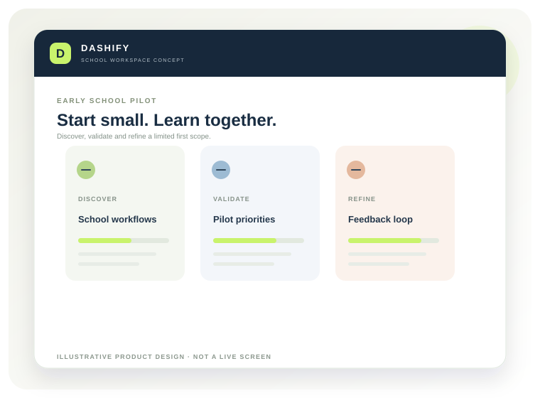

Private schools with recurring admin workflows
Schools interested in bringing student information, attendance and fee administration into more consistent processes.
We are inviting interested private schools to take part in structured discovery and assess suitability for an early, limited-scope pilot. The programme is designed to validate needs before wider release.

Illustrative product concept · DASHIFY by BRIZNOVAThese visuals describe the proposed experience and working approach. Final screens, permissions and available features will be confirmed as the product is built and validated with schools.
A product should fit the school — not the other way around.
Early conversations help identify which school routines are genuinely difficult, which information needs to be connected and what a school team would consider a meaningful improvement.
A pilot is a controlled way to validate a small set of workflows with clear responsibilities, agreed measures and a feedback process. It is not a promise that every planned feature is already available.
The initial scope under consideration is intentionally narrow. Final inclusion depends on product readiness and written agreement with each school.
The strongest pilot partner can share process knowledge, nominate users and provide candid feedback.
Schools interested in bringing student information, attendance and fee administration into more consistent processes.
A principal, owner or administrator who can help evaluate operational fit and make scope decisions.
Representatives from administration, teaching and accounts who can participate in walkthroughs.
A willingness to use synthetic data first and agree safeguards before any real student data is considered.
Submitting interest should start a discussion, not create a contract or guarantee pilot selection.
Tell us your school type, approximate size and the workflows you want to improve.
We will ask how the school manages records, attendance, fees and communication today.
If there is a fit, we will define scope, responsibilities, data safeguards and next steps in writing.
Share your school details and operational challenges to assess whether a discovery session is appropriate.